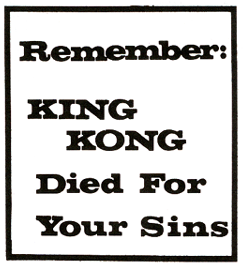
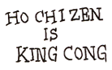

|
As she had promised, she maneuvered earthly happenings so that Paris could have Helen (the Helen) then living with her husband Menelaus, King of Sparta. Anyway, everyone knows that the Trojan War followed when Sparta demanded their Queen back and that the Trojan War is said to be The First War among humankind.
And so we suffer because of the Original Snub. And so a Discordian is to partake of No Hot Dog Buns.
Do you believe that?
________________
* This is called THE DOCTRINE OF THE ORIGINAL SNUB
** There is historic disagreement concerning whether this apple was of metallic gold or acapulco.
*** Actually there were five goddesses, but the Greeks did not know the Law of Fives.


5. An Age of Confusion, or an Ancient Age, is
one in which History As We Know It begins to
unfold, in which Whatever Is Coming emerges
in Corporal Form, more or less, and such times are
Ages of Balanced Unbalance, or Unbalanced
Balance.
6. An Age of Bureaucracy is an Imperial Age in
which Things Mature, in which Confusion becomes
entrenched and during which Balanced Balance,
or Stagnation, is attained.
7. An Age of Disorder or an Aftermath is an
Apocalyptic Period of Transition back to Chaos
through the Screen of Oblivion into which the
Age passeth, finally. These are Ages of
Unbalanced Unbalance.
HBT; The Book of Uterus, Chap. 3
|